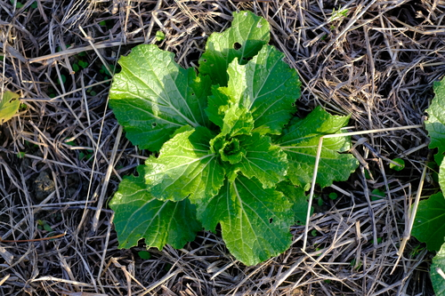
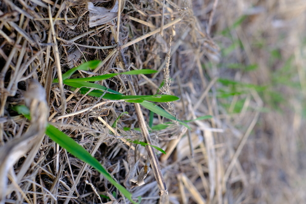
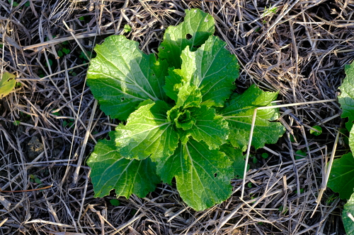
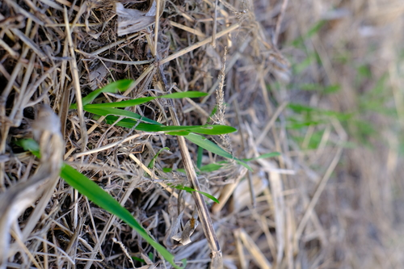

令和3年 農業日誌
（旧暦）
師走
晴。畑の畝作り。菜っ葉の間引き。畝の間の溝に水が貯まっている。もう少し乾燥していたほうがいいのだろうか。菜っ葉はどれも成長が良いように見える。
晴。畑の方に畝を少し作った。じゃが芋を植えたいので少し高めの畝にする。昨年度は雨が続いて水没した部分が腐ってしまったのだ。今年はうまくいくといいな。新暦では年が明けた。今日は一日遅れたが七草粥を食べた。畑の隅に大根の余った苗をまとめていたのでそれを抜いて粥に入れた。成長がいいものは太さが15mm程度になっていた。玉葱の苗もまた少し定植した。始めの方に植え替えたもののうち一本だけ葉が太く、濃い緑になっていた。他のものは植えてから変化がないように見える。麦も変化があまりない。
霜月
晴。田圃の溝を少し整備。麦が成長してひとつめの畝は遠くからでもうっすらと緑に見えるようになった。畑の野菜もそれなりに育っている。
和歌山大根 大和真菜
大和真菜 松島新二号白菜
いちばんぼし(裸大麦)
松島新二号白菜
いちばんぼし(裸大麦)
曇り時々雨。玉葱の定植。白菜、大根、真菜等が大きくなってきた。麦も大分育ったので踏もうとしていたら雨が降って来てできなかった。畔に子猫が居た。
晴。久々に冬らしく寒い朝だった。昼間は日が照って暑い。壬生菜の定植。畝作り。
晴。麦蒔きが完了した。庭のプランターに植えていた壬生菜を半分ほど畑に植えかえた。大根がわずかに太くなっている。
晴。日差しが強くて暑い。麦の続き。4本目の畝は小さいので草を刈らずに上から蒔いた。結局草刈りは全部は終わらず次の日に持ち越し。
晴。麦の続き。3本目の畝に蒔き終わった。始めに蒔いたところはそろそろ麦踏みか。
曇時々晴。麦の続き。玉葱の移植。太いものから7本植えた。
神無月
晴。麦の続き。疲れがでてしばらく休んでいた。気付けば一週間ぶりの作業である。急いては事を仕損じる。結局ゆっくりやったほうが早く蒔けていただろう。始めに蒔いた麦はもう5cmほどに成長していた。
曇時々雨。麦を蒔くための草刈りの続き。今日は200g蒔けた。既に蒔いていたものからもやしのようなものが出ているのを確認。根っこか。玉葱と壬生菜の苗も大きくなってプランターでは窮屈そうなので早く定植しなければ。
晴のち曇。麦を蒔くための草刈りの続き。3時頃まで出掛けていたので今日は1時間だけ作業。
晴。麦蒔きの続き。蒔いてから草を刈るのではいそがしいので草を刈ってから蒔くことにした。また短期間のうちに全面蒔くのはあきらめた。
晴。麦を蒔いた。一番長い畝の2/3ほど蒔けた。ばら蒔きした後草を刈る。この草刈に思ったより時間がかかる。のこぎり鎌でないと歯がすぐに丸くなる。買い替えようか。
曇後晴。昼過ぎまで曇りで寒かったが昼から晴れて暑い。麦の畝がだいたい形になったところに丁度麦の種が届いた。和歌山県農業公社に申請していた畑を借りるための申請が通りそうだと、JAの人から連絡が入った。晴れて農家である。畑の方に山東菜を蒔いた。作業が続いて筋肉の動きが鈍ってきた。疲れない動き方ができるようになりたい。
快晴。朝は季節にふさわしく寒いが日差しが強く昼は暑い。出掛ける時、以前声を掛けてくれた92才のおじいちゃんとすれ違う。田圃に畝を作るために溝を掘った。この田圃を借りてから続けていた作業だがもう少しで終りそうだ。11月中旬が麦蒔ききの適期であり既に少し遅い。田圃の隣のおばちゃんが蜜柑をくれた。